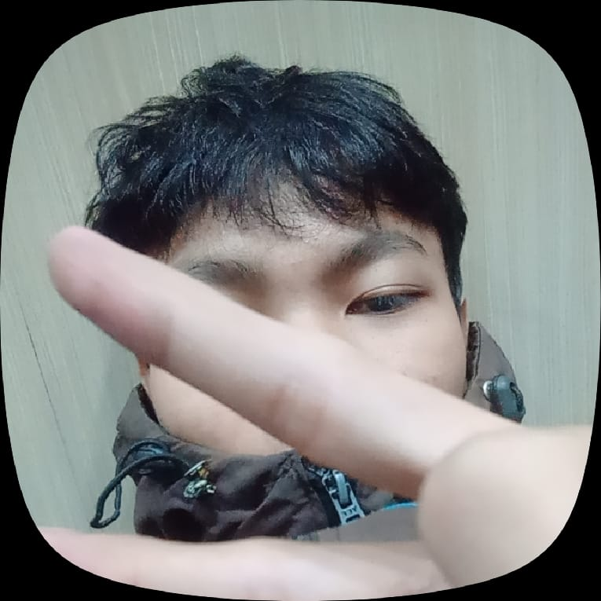

Halo, nama saya
M. Khairul A
Saya |
Saya Antusias dengan perkembangan teknologi dan selalu ingin belajar hal baru, khususnya di bidang IT Support dan desain visual.

Tentang saya
Siswa Teknik Komputer & Jaringan (TKJ) yang fokus di bidang IT Support, hardware troubleshooting, desain grafis, serta kepemimpinan organisasi.
Saya siswa SMK jurusan Teknik Komputer dan Jaringan (TKJ) dengan ketertarikan besar pada perakitan dan troubleshooting hardware PC maupun HP. Selain teknis IT, saya juga menyukai dunia seni visual dan desain grafis—mulai dari eksperimen karya graffiti, pembuatan logo, hingga desain poster. Di luar kegiatan belajar, saya aktif di OSIS sebagai Ketua Sekbid Bela Negara. Melalui peran ini, saya mengasah kemampuan kepemimpinan, manajemen tim, dan eksekusi acara sekolah, sekaligus bertanggung jawab atas kebutuhan visual dan editing media untuk program kerja divisi kami.
Hobby Saya
- Main Game85%
- Ngoding65%
- Desain70%
- Mendengarkan Musik90%
pengalaman
Praktik Kerja Lapangan (PKL)
Bertanggung jawab atas pemeliharaan sistem, perbaikan hardware/software, serta penyiapan infrastruktur IT/AV untuk kuliah dan acara kampus Universitas Indonesia. Saya juga bekerjasama dengan tim IT UI dalam menjaga stabilitas jaringan dan menyelesaikan kendala teknis harian.
Organisasi
Memimpin divisi Ketua Sekbid Bela Negara OSIS, mengatur penugasan anggota lapangan, serta pelaksanaan upacara bendera rutin. Selain itu, saya mengikuti koordinasi eksekusi acara-acara besar sekolah agar berjalan lancar.
Desain Grafis
Merancang berbagai aset visual seperti poster, logo, dan konten media untuk mendukung publikasi program kerja OSIS. Saya juga aktif mengembangkan keterampilan desain digital secara mandiri.
Kontak
Hubungi saya lewat: